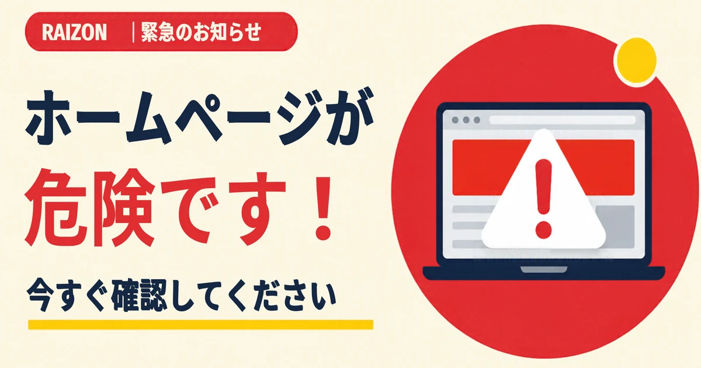
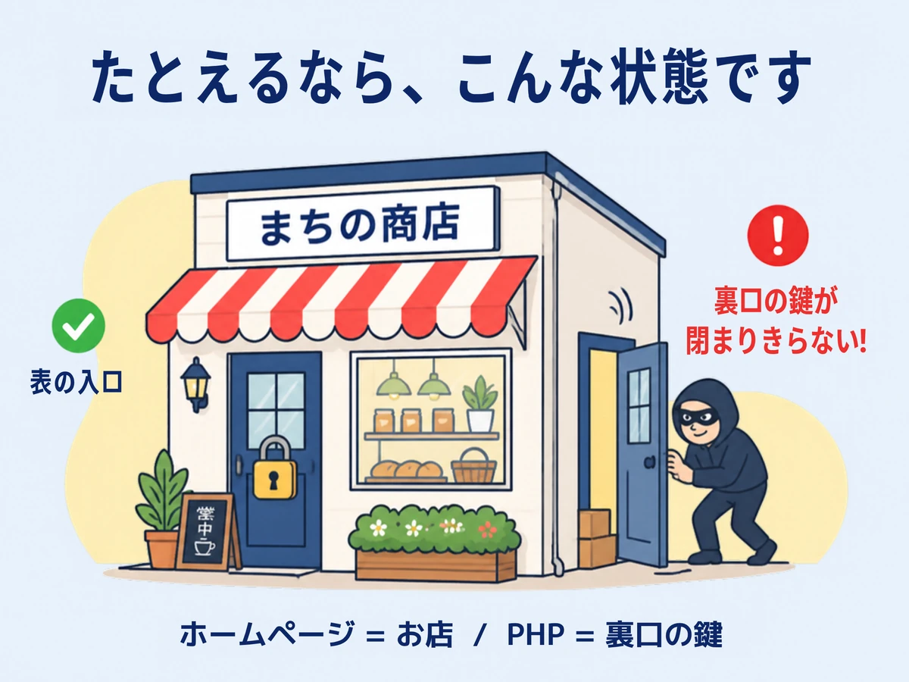
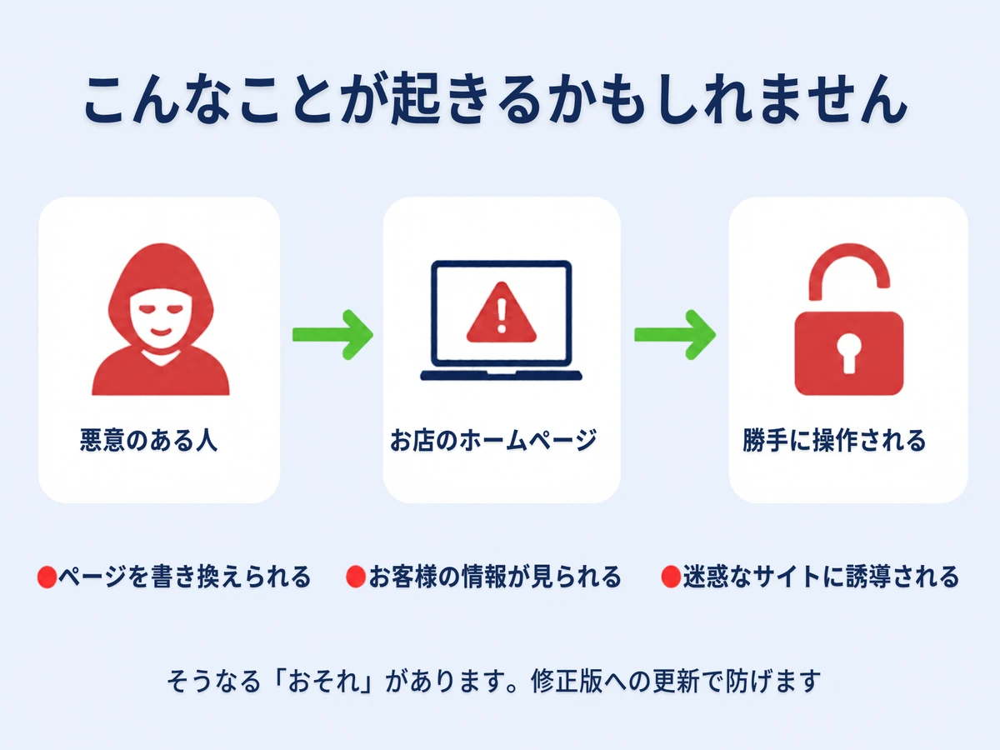
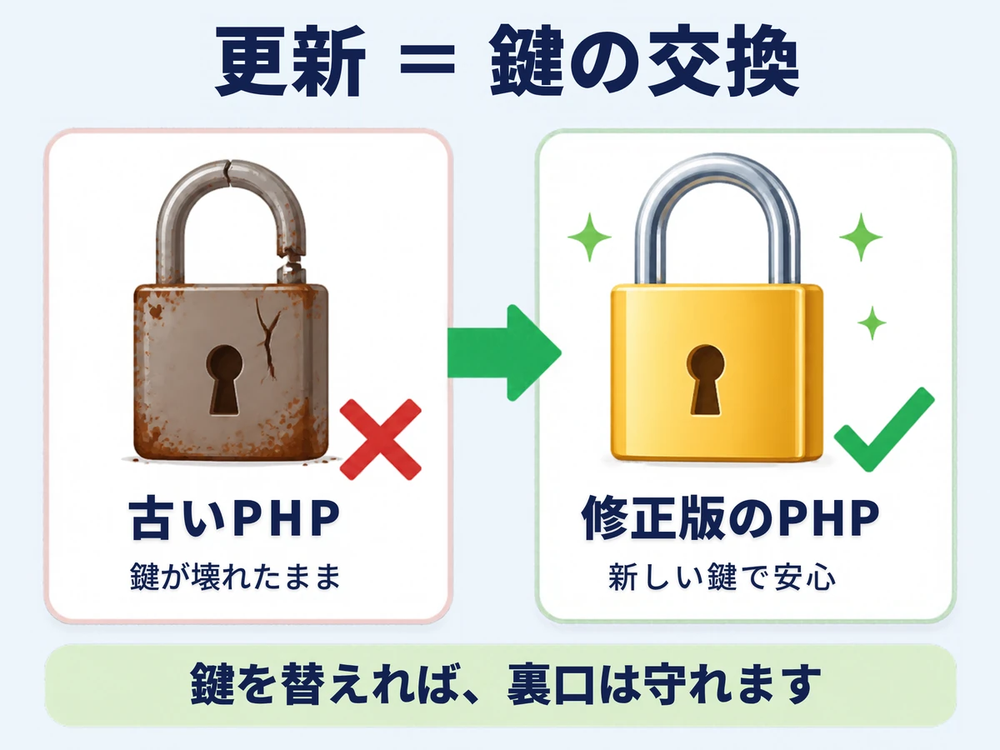
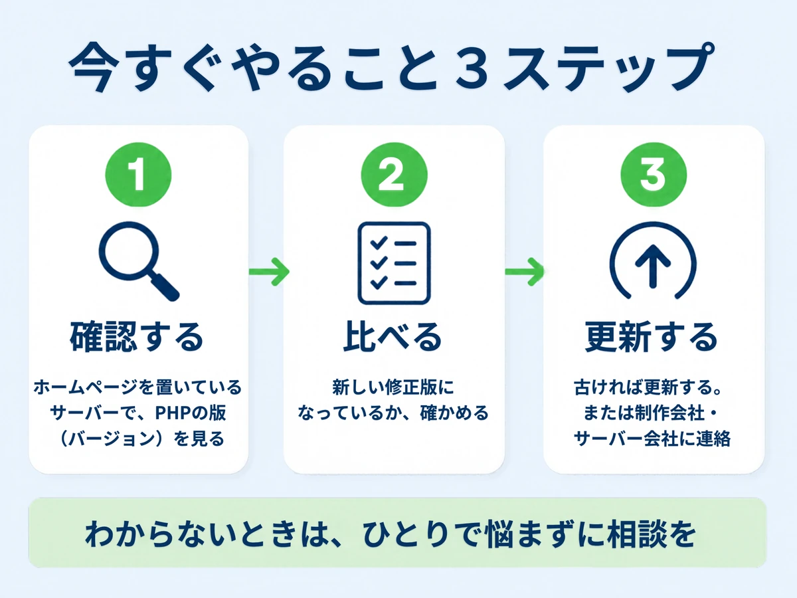

PHPの脆弱性とは？ホームページへの影響と今すぐできる対策｜東大阪の事業者さんへ

東大阪・大阪・奈良・京都の事業者さんのホームページにも関わる「PHPの脆弱性（PHP2Shell）」が、10月21日に公表されました。たとえ話と図で、何が危険か、今すぐ何をするかを、やさしく説明します。
- ホームページを「お店」とすると、PHPは「裏口の鍵」。その鍵に、危険な弱点が2件見つかった
- 放っておくと、ページを書き換えられたり、お客様の情報を見られたりするおそれがある
- 直し方は、鍵を替えるのと同じ。サーバーのPHPを「修正版」に更新すれば守れる
PHPの脆弱性とは？お店にたとえると

ホームページを「お店」だとします。多くのお店では、お客様に見えない「裏方の仕事」を、「PHP（ピーエイチピー）」という部品が担当しています。お問い合わせフォームや、予約フォーム、WordPressの動きも、PHPのおかげです。お店でいえば、「裏口の鍵」のような存在です。
今回、その鍵に、「閉まりきらないことがある」という弱点が見つかりました。この弱点のことを、専門用語で「脆弱性（ぜいじゃくせい）」といいます。
ニュースなどでは「PHP2Shell（ピーエイチピー・ツー・シェル）」と呼ばれ、番号は「CVE-2026-109618」「CVE-2026-109619」の2件です。どれも同じ話なので、番号を覚える必要はありません。
何が起きたの？（2026年10月21日）
PHPの公式サイトでは、10月21日に、弱点を直した「修正版」が公開されました。ポイントを、お店にたとえて整理します。
- 合い鍵がなくても、入られるおそれ：ログインなどをしていない外部の人でも、インターネット越しに狙える可能性がある
- 深刻度は、最上位に近い：10点満点中9.2という、非常に高い評価（2件とも）
- 古い鍵（古い版）も、同じ弱点：過去10年ほどのPHPが、対象になる可能性がある
- 手口が、先に知られていた：報道では、修正版の公開前から、この弱点を狙う動きがあったと伝えられている
公式は、早めの更新を呼びかけています。
どういうところが、危険なの？

この弱点を悪用されると、悪意のある人に、ホームページの裏側を、勝手に操作されてしまうおそれがあります。お店にたとえると、次のようなことです。
- ページを書き換えられる（看板を、勝手に付け替えられる）：知らないうちに、お店の情報や、見た目が変えられてしまう
- お客様の情報が見られる（名簿を、のぞかれる）：お問い合わせフォームなどで集めた情報が、見られてしまう
- 迷惑なサイトに誘導される（お客様を、別の店へ案内される）：お客様が、関係のないサイトに飛ばされてしまう
自分のホームページは、関係あるの？
次のどれかに当てはまる場合は、確認をおすすめします。
- WordPressで、ホームページを作っている
- お問い合わせフォームや、予約フォームがある
- レンタルサーバーに、ホームページを置いている
なお、WordPress本体については、「今回の件で、WordPress自体の更新は必要ない」と、WordPress.orgが案内しています。ただし、WordPressを動かしているサーバー側のPHPは、別に更新が必要です。
PHPの脆弱性への対策：鍵を交換しよう

対策は、とてもシンプルです。壊れた鍵を、新しい鍵に交換するのと同じように、PHPを「修正版」に更新します。スマートフォンのアップデートと、同じようなものです。

1. 確認する（今、どの鍵を使っているか、見る）
レンタルサーバーの管理画面で、「PHP」「PHPバージョン」といった項目を探します。今、どの版が使われているか、確認できます。
2. 比べる（新しい鍵と、合っているか確かめる）
今回の修正版は、次のとおりです。お使いの系統の、この番号以上になっているか、確かめましょう。
- PHP 8.5系：8.5.12
- PHP 8.4系：8.4.27
- PHP 8.3系：8.3.36
- PHP 8.2系：8.2.35
3. 更新する、または相談する（鍵を、交換する）
古ければ、更新します。サーバー会社が、すでに自動で更新していることもあります。やり方がわからないときは、ホームページの制作会社や、サーバー会社に、「PHPの更新はできていますか？」と、聞いてみてください。
すぐに交換できないときは
PHPの公式サイトには、更新までの間、被害を減らすための一時的な設定も、案内されています。いわば、「裏口に、とりあえず、つっかえ棒をする」ような応急処置です。ただし、設定の変更には、専門の知識が必要です。しかも、「更新が唯一の完全な対策」と、公式にも書かれています。
ご自身で行うのは難しいので、サーバー会社や、制作会社に、そのまま相談するのが安心です。PHP 8.1より古い版を使っている場合は、PHPの公式の更新が終わっているため、新しい版への切り替えも、あわせて相談してください。
これから、できる備え
- ホームページを、誰が管理しているか、はっきりさせておく（お店の「鍵の管理役」を決める）
- サーバー会社からの、更新のお知らせメールを、見落とさない
- お問い合わせフォームなどで集めた、お客様の情報の扱いを、見直しておく
ホームページの更新の考え方は、ホームページの更新は、どのくらいの頻度で必要？のコラムでも、解説しています。業者を選ぶときの注意点は、契約前に確認したい7つのサインも、参考にしてください。
RAIZONのご相談について
RAIZONは東大阪市を拠点に、大阪・奈良・京都の事業者さんも、オンラインでサポートしています。「自分のホームページが、今回の件に関係あるのか、わからない」といったご相談も、状況に合わせて、一緒に整理します。お問い合わせフォームから、お気軽にどうぞ。
よくある質問
PHPの脆弱性（PHP2Shell）とは、何ですか？
ホームページを動かす部品「PHP」に見つかった、危険な弱点のことです。ニュースなどでは「PHP2Shell」と呼ばれています。お店にたとえると、裏口の鍵が、閉まりきらないことがある状態です。
放っておくと、どうなりますか？
ページを書き換えられたり、お客様の情報を見られたり、迷惑なサイトに誘導されたりする「おそれ」があります。すぐに被害が出ると決まったわけではありませんが、修正版への更新を、早めにおすすめします。
PHPとは、何ですか？
ホームページの裏側で、問い合わせフォームの処理などを行う「部品」のひとつです。WordPressも、PHPで動いています。
うちのホームページがPHPか、どうすればわかりますか？
レンタルサーバーの管理画面に、PHPのバージョン（版）が表示されていれば、使われている可能性があります。わからないときは、制作会社や、サーバー会社に、確認しましょう。
更新すると、ホームページが表示されなくなることはありますか？
古いプラグインやテーマが、新しい版に対応していないと、不具合が出ることがあります。更新の前に、バックアップ（コピー）をとっておくと安心です。
この記事の情報は、いつ時点のものですか？
2026年10月22日時点の、PHP公式サイトなどの情報をもとにしています。最新の情報は、PHPの公式サイトで、ご確認ください。
ほかのコラム
 制作の基礎
制作の基礎ホームページに載せる写真は何を撮る？スマホでできる撮り方のコツ｜東大阪の事業者さんへ
東大阪・大阪・奈良・京都でホームページを作る事業者さん向けに、載せたい写真の種類と、スマートフォンでもきれいに撮るコツを、やさしく解説します。プロのカメラマンがいなくても大丈夫です。
 制作の基礎
制作の基礎こんなホームページ制作会社には要注意！契約前に確認したい7つのサイン
初期費用が高すぎる、5年以上の縛り、リース契約、ドメインが制作会社名義など、東大阪・大阪・奈良・京都の個人事業主さんが、契約前に確認したいホームページ制作会社の7つの注意サインをまとめました。
 集客・運用
集客・運用ホームページとGoogleマップ（MEO）の関係｜東大阪・大阪・奈良・京都の事業者さんへ
「東大阪 ○○」「奈良 ○○」「京都 ○○」と検索したときに、地図で見つけてもらうための、Googleビジネスプロフィールとホームページの関係を、やさしく解説します。